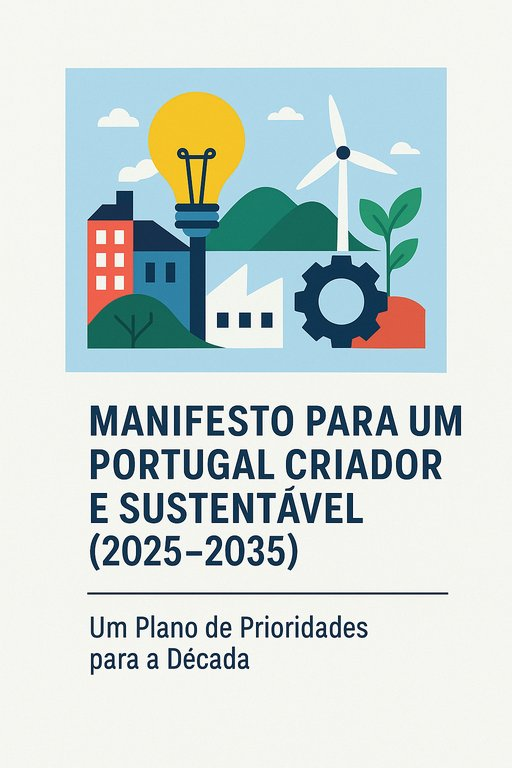

Manifesto para um Portugal Criador e Sustentável (2025-2035)
Publicado em 2025-06-24 17:19:44

Após o manifesto pela Educação que poderão encontrar neste link, e se os governos tivessem a coragem de empreender uma revolução profunda no sistema educativo de Portugal, com pensamento crítico, liberdade criadora e foco na excelência, abrir-se-ia a porta para algo raríssimo: um verdadeiro renascimento nacional.
Mas como toda grande mudança precisa de alicerces sólidos, e um plano minimamente arquitetado, com base na minha visão e na minha análise ao longo de algumas decadas, as principais prioridades nacionais a serem articuladas num plano a 10 anos, que deveriam caminhar a par da revolução educacional, seriam as seguintes:
📌 1. Reindustrialização Tecnológica Inteligente
Portugal precisa de fazer aquilo que nunca fez bem: criar riqueza transformando ideias em produtos.
Investir em polos tecnológicos, biotecnologia, energias limpas, materiais avançados, computação quântica e IA com infraestruturas de alto nível e capital de risco real.
- Criar “Zonas de Inovação Livre” (ZIL) com incentivos fiscais, liberdade regulatória experimental e ligação direta às universidades.
- Produção nacional com base em conhecimento, e não em mão-de-obra barata.
📌 2. Reforma Fiscal com Justiça e Produtividade
A fiscalidade atual castiga o trabalho, a criação e o risco. É preciso:
- Aliviar impostos sobre PME e trabalho criativo.
- Tributar rendas especulativas, lucros improdutivos e grandes fortunas improdutivas.
- Simplificar tudo: uma revolução digital na relação entre Estado e contribuinte.
📌 3. Agricultura Regenerativa e Soberania Alimentar
A terra portuguesa é fértil, mas abandonada ou explorada com pesticidas em excesso.
- Incentivar cooperativas agrícolas tecnológicas, produção biológica e redes de distribuição locais.
- Aposta na autossuficiência alimentar regional, para reduzir dependências e revitalizar o interior.
📌 4. Democratização do Acesso à Habitação
Sem teto, não há crescimento. E os jovens estão a fugir por isso mesmo.
- Bancos de terrenos públicos para construção a custos controlados.
- Arrendamento acessível como política de Estado, não de mercado.
- Requalificação de edifícios devolutos com mão-de-obra jovem em formação técnica.
📌 5. Novo Modelo de Saúde e Bem-Estar
Saúde preventiva, tecnológica e descentralizada.
- Unidades móveis de cuidados com IA e telessaúde nos meios rurais.
- Integração da medicina tradicional com práticas validadas (nutrição, psicologia, fisioterapia integrativa).
- Formação em literacia de saúde nas escolas desde o ensino básico.
📌 6. Empreendedorismo de Impacto e Economia Circular
Criar valor com ética, regeneração e tecnologia.
- Financiamento público e privado a startups de impacto (educação, saúde, clima).
- Criação de “Moedas Locais” digitais nas regiões mais pobres, para estimular economias circulares.
- Reconhecimento fiscal de empresas com impacto social positivo real.
📌 7. Estado Ágil, Ético e Digital
Desburocratizar. Digitalizar com inteligência. Humanizar o serviço público.
- Plataformas únicas de serviços ao cidadão, com interface claro, IA assistente e linguagem simples.
- Transparência radical: todos os contratos públicos publicados automaticamente.
- Formação obrigatória em ética, digitalização e inovação para todos os gestores públicos.
📌 8. Restauração Cultural e Identitária
Uma nação sem alma não avança.
- Apoio à criação cultural independente, com circuitos de distribuição alternativos.
- Valorização da língua portuguesa como veículo de criação global.
- Portugal como “Laboratório de Cultura Livre” — desde o Fado às artes digitais.
📌 9. Diáspora e Retorno de Cérebros
Atrair os que partiram — e os que nunca vieram.
- Criação de um “Passaporte do Retorno”, com isenções e apoio a projetos de quem regressa com conhecimento.
- Centros de inovação geridos por luso-descendentes e imigrantes qualificados.
📌 10. Despertar Cívico e Participação Direta
Democracia não é votar de 4 em 4 anos. É participar todos os dias.
- Plataformas digitais de participação pública com votação direta em projetos locais.
- Formação em debate, retórica e pensamento crítico desde a escola.
- Apoio a assembleias cidadãs deliberativas e consultivas nas regiões.
🌟 E tudo isto sustentado por… uma nova narrativa nacional.
Um Portugal criador, pensador, regenerador, que troca o conformismo por imaginação e o assistencialismo por dignidade criadora.
Artigo de Francisco Gonçalves, com a colaboração de Augustus Veritas in Fragmentos de Caos